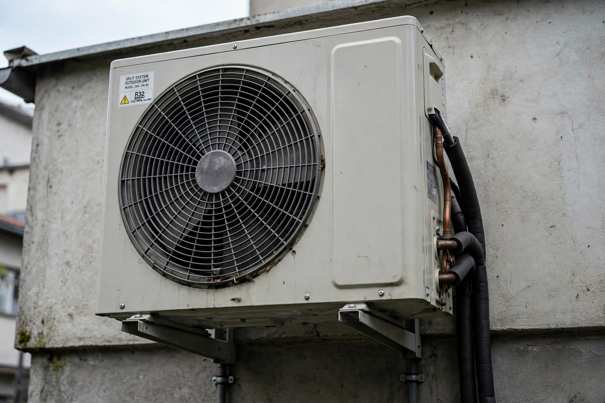

Air conditioning, often abbreviated as A/C or AC, is the process of removing heat from an enclosed space to achieve a more comfortable interior temperature and, in some cases, also controlling the humidity of internal air. Air conditioning can be achieved using a mechanical "air conditioner" or by other methods such as passive cooling and ventilative cooling.

The concept of cooling buildings dates to antiquity — the Egyptians hung wet reeds in windows, and Persian badgir (windcatchers) channelled air over water. Modern mechanical air conditioning began in 1902, when the American engineer Willis Carrier installed a system at a Brooklyn printing plant to control humidity that was wrinkling paper. Carrier patented his "Apparatus for Treating Air" in 1906 and founded the Carrier Corporation in 1915.
Air conditioning spread from factories and movie theatres into offices, department stores and homes after the Second World War, transforming architecture (allowing sealed glass towers and deep-plan buildings), the settlement of hot regions such as the American Sun Belt, and data centres and hospitals.
Most air conditioners use the vapour-compression refrigeration cycle: a refrigerant is compressed, condensed with heat rejection outdoors, expanded, and evaporated in an indoor coil, absorbing heat from the room air. Early refrigerants such as chlorofluorocarbons (CFCs) were phased out under the Montreal Protocol because they deplete the ozone layer; modern systems use hydrofluorocarbons or lower-impact alternatives such as R-32 and R-290.
Air conditioning accounts for a substantial share of building electricity use worldwide, and demand is growing rapidly with rising incomes and temperatures in the tropics. Improving efficiency standards and refrigerant choice are major levers for reducing its climate impact.
From Wikipedia, the free encyclopedia.